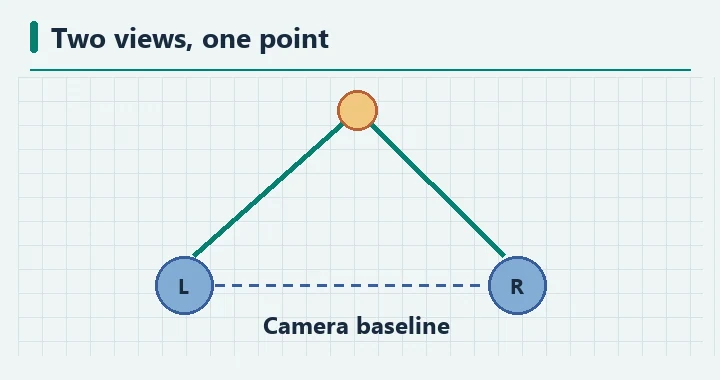
双目测距
为什么远处的深度更难测准？
拖动相机与目标，改变基线和测量噪声。再沿着双目几何读到多视角重建、神经渲染与三维生成。
没有找到对应实验。试试「傅里叶」「置信度」「位姿」或缩短关键词。
从一对照片和一段视频入手，追问我们究竟能从像素恢复什么。

双目测距
拖动相机与目标，改变基线和测量噪声。再沿着双目几何读到多视角重建、神经渲染与三维生成。
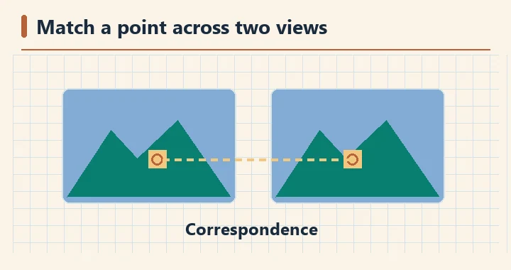
真实双目
在车库实拍中匹配一个细节。把右图落点移一像素，比较近景与远景的深度误差，再检查有遮挡的像素。
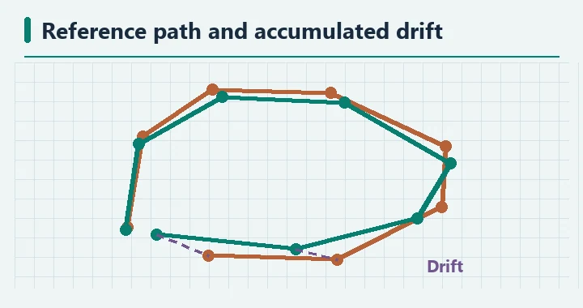
相机位姿
回放真实画面，对照参考轨迹与人为加入的偏移。从控制点和 RANSAC 读到回环、视觉惯性融合与动态场景中的位姿估计。
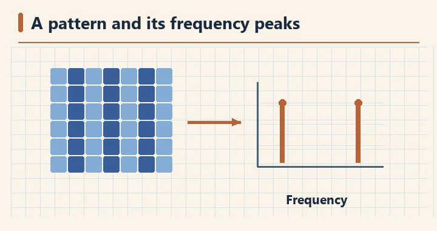
傅里叶变换
比较幅度与相位交换后的图像，再让相位相关找回平移。重复条纹会给出多个候选。
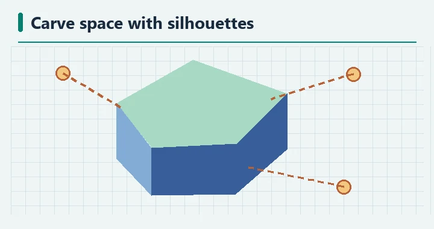
视觉外壳
让多台相机拍同一个物体，再用轮廓削掉不可能的空间。切开重建结果，核对它有没有恢复凹槽。
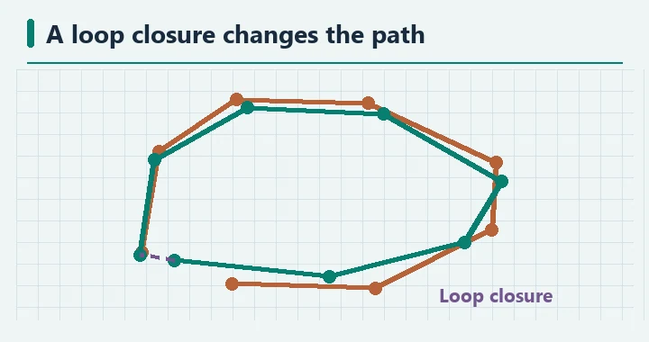
回环与位姿图
逐帧累加含噪运动，再加入正确或错误的回环，观察整条路线怎样重新分配误差。
改变训练条件、奖励或采样过程，观察模型怎样学习、生成和决策。
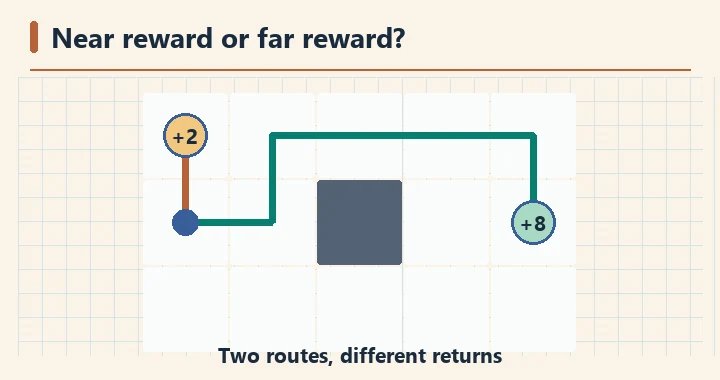
强化学习（RL）
先弄清状态、动作、奖励与策略，算一次长期回报。再比较探索策略、回放迷宫里的 Q 值更新，检查代理奖励会不会让策略偏离目标。
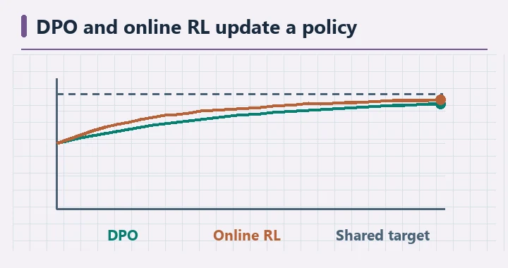
DPO 与在线强化学习
用固定偏好对训练 DPO，用新采样到的奖励更新在线 RL。对比信号一致与冲突时的实际更新和理论最优值。
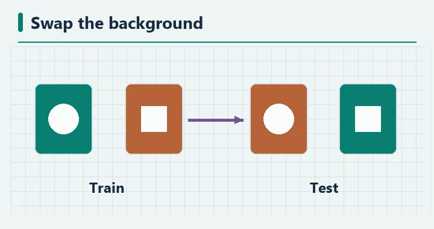
数据偏差
保留形状，只换颜色，再训练同一卷积网络。比较总体准确率、最差组准确率，以及改变测试环境后的表现。
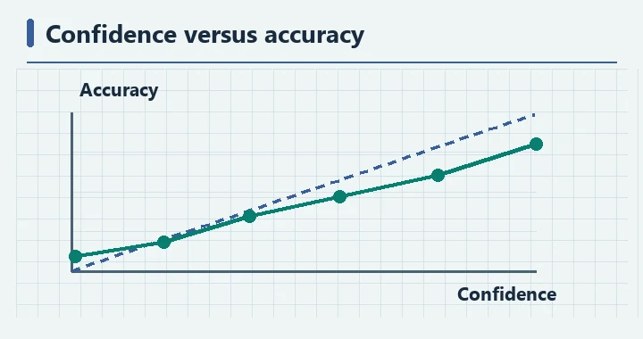
置信度
用上一站的分类器比较预测置信度与实际正确率。然后调整自动采用阈值，检查哪些样本需要转人工。
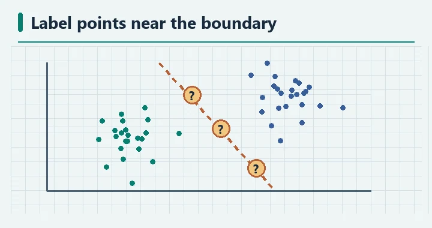
主动学习
用相同预算比较随机、最不确定、最远优先。加入边界旁的模糊样本，观察预算流向与测试准确率。
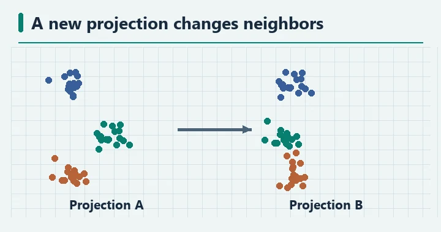
降维与向量
固定图块描述，切换 PCA、t-SNE 和 UMAP。点选一个图块，比较原空间与二维图的最近邻。
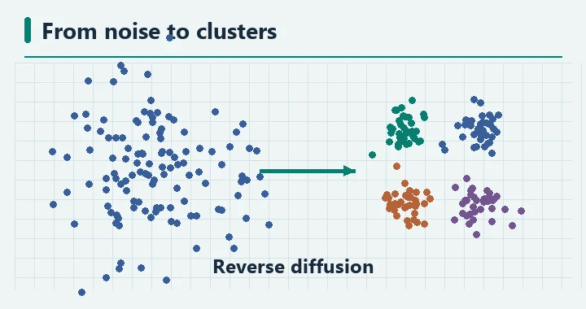
扩散模型
拖动加噪与去噪时间轴。固定起始随机噪声，比较不同采样步数和条件引导强度下的结果。
从模型怎样处理输入，到回答出现时怎样检查它的依据。
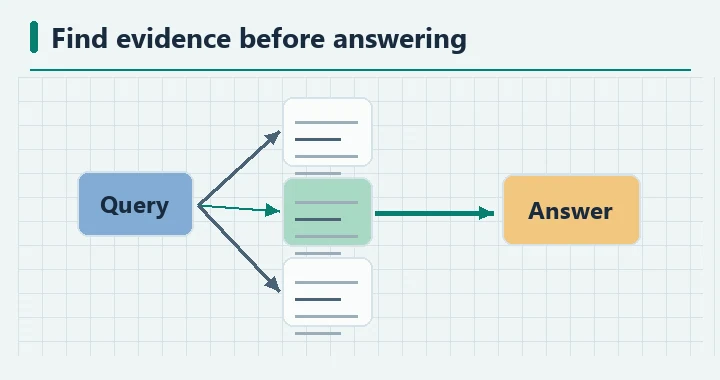
RAG
调整切块、排序与上下文预算，观察相关资料在哪一步丢失。移走新规或跨文档证据，检查回答能否正确拒答。
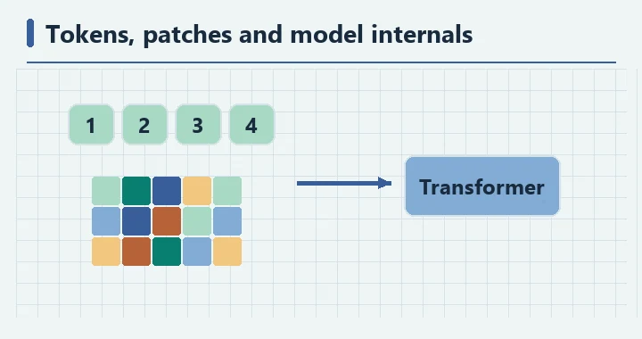
基础课程
Model Mechanics 的 28 个实验，从 BPE 和语言 Transformer 走到 Patch Lens、ViT、训练与泛化，再到 MoE、GNN 和强化学习。
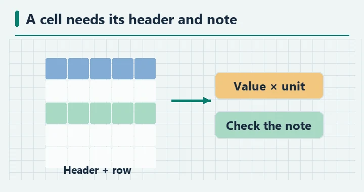
表格 RAG
从报告中保留或移除年份行、表头和脚注，核对答案用的是实付还是预算，单位与算式是否正确。
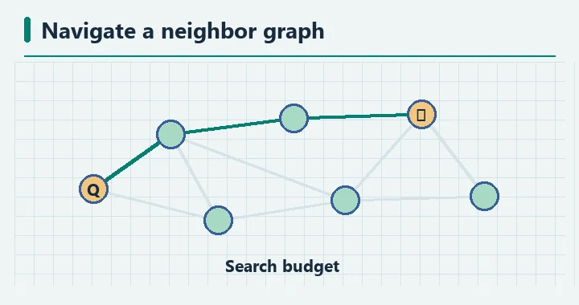
向量索引
在近邻图中花有限预算寻找候选，与全量扫描的精确前十比较，再检查 RAG 所需的证据是否还在。
从现象和方法回到自己的数据，检查开始实验前有哪些假设已经被破坏。
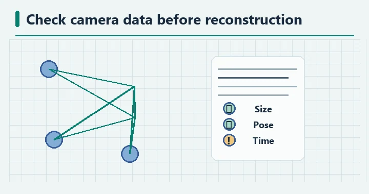
多视角数据体检
先读一份故意混入异常的示例报告，再检查自己的图像尺寸、相机内参、位姿和时间戳。
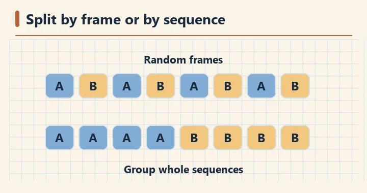
评估协议
用近邻分类器比较按帧随机与整段留出。点开它借用的训练帧，核对测试中有没有熟悉场景。
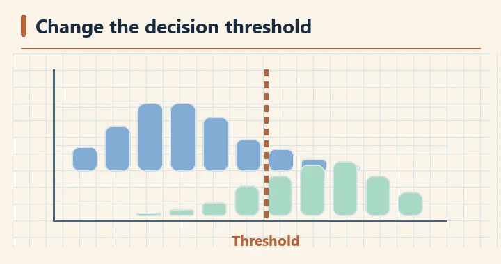
分类阈值与代价
固定分类分数，只改阈值、阳性基率和漏报代价。通过混淆矩阵检查误报与漏报的取舍。

ROC、PR 与类别不平衡
固定模型得分，扫描阈值并改变阳性基率，对照误报率、召回率和精确率。

分组误差与复核预算
比较统一与分组阈值，检查召回差距缩小后，待复核数量会不会超出预算。
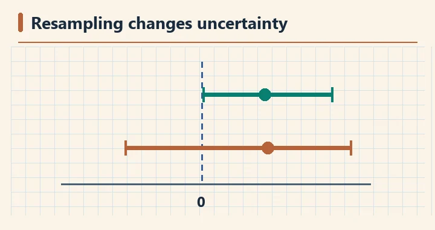
配对评估
固定两个模型对同一批帧的预测，增加重复帧或独立片段，对照逐帧与按片段重采样的差值区间。
从打开网页开始，逐层拆解包如何转发、丢失怎么补、路径拥塞时怎样调节发送。
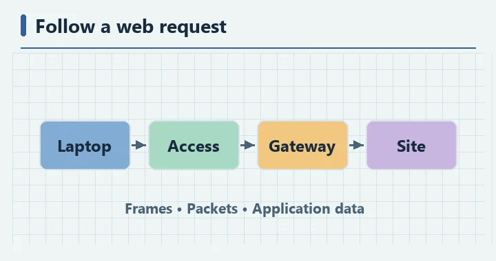
计算机网络基本知识
跟着一次请求看设备和协议如何配合，比较 HTTP/2 与 HTTP/3。拆开包看逐跳转发，再根据观测记录排查网络与应用风险。
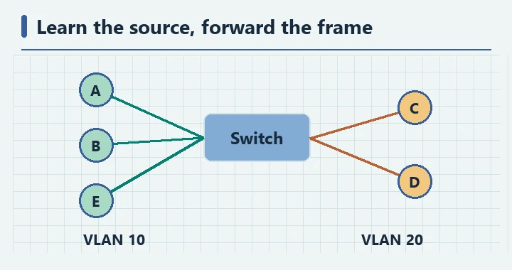
以太网交换机
从空的 MAC 地址表回放学习过程，再切换 VLAN，观察未知单播的范围。
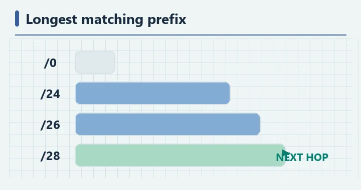
IPv4 转发
对比重叠的地址前缀，移除最具体的路由，观察下一跳怎样改变。
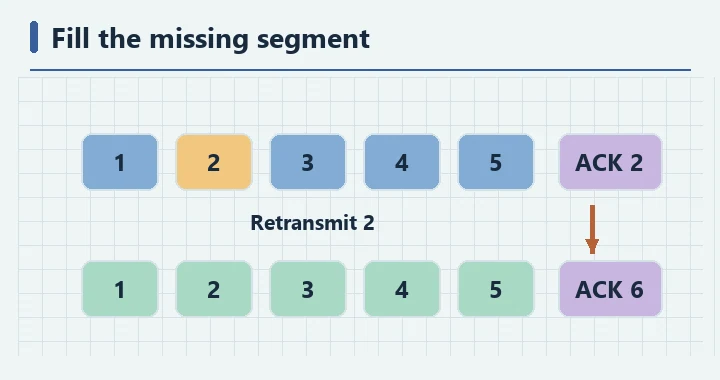
可靠传输
逐步回放一组数据段，观察累计 ACK、乱序缓存与超时重传。
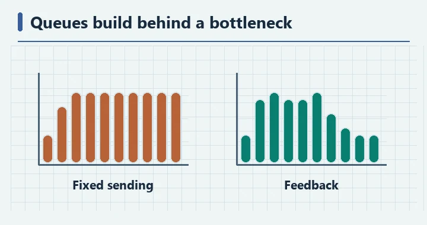
排队与拥塞控制
改变瓶颈速率与缓存，比较固定发送和简化 AIMD 的交付量、积压与丢弃。
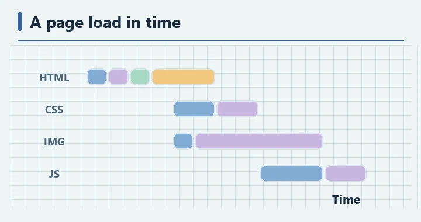
请求瀑布图
调节往返时延、服务器耗时与缓存。比较两次总耗时相近的加载，找到是文档来得慢，还是图片下得慢。
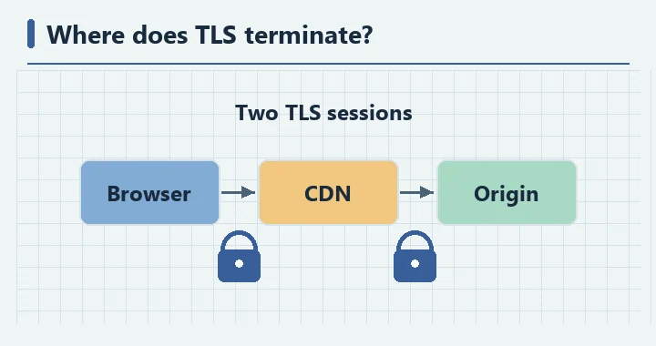
网络信任边界
让 DNS 缓存过期，切换 HTTPS 的观测位置，再按访客、学生和运维身份逐层检查访问权限。
从密码原语与系统信任出发，继续追问模型能看到什么、能做什么，以及指标和偏好能说明什么。
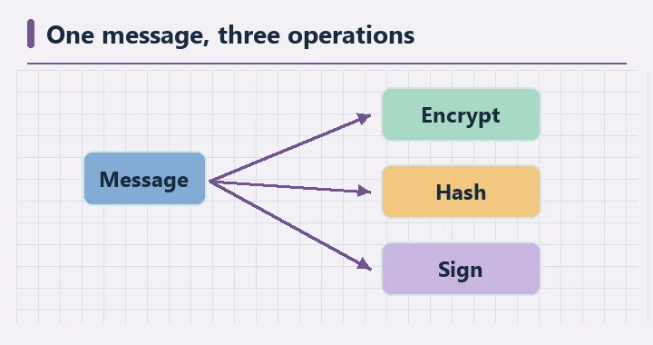
密码学入门
先分清明文、密钥、IV、标签和摘要，再实际运行 AES-GCM、RSA 混合加密、SHA-256 与 ECDSA。
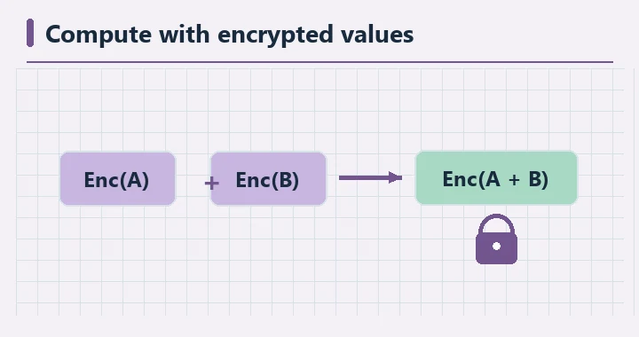
全同态加密
自己算一次密文加法与乘法。增加初始扰动和乘法深度，看解密什么时候会出错，再理解为什么需要自举。
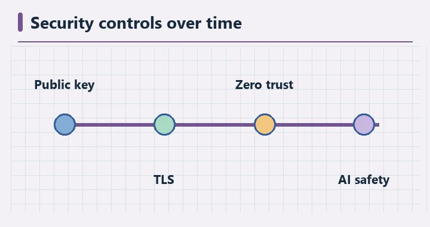
安全技术演进
从古典密码、公钥和认证加密，走到 TLS、零信任、供应链和生成式 AI。沿时间线对照攻击方式、信任边界与防护。
系统权限和数据保护解决信任边界问题。评估与对齐则关心行为是否可靠、判据是否可信、要优化的目标是否合适。
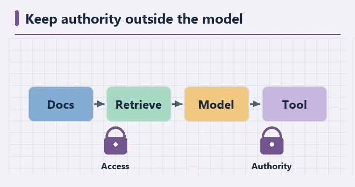
大模型安全
在虚构的 RAG 沙盒中切换身份和前置权限，核对资料能不能读、答案能不能用、操作能不能做。
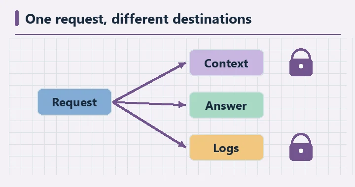
AI Security · 日志与隐私
用合成请求检查上下文、回复和诊断日志的字段，比较数据最小化、日志白名单与保留期。
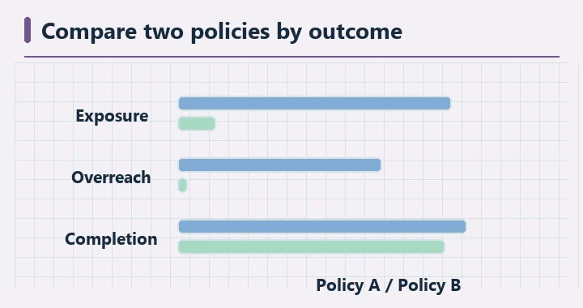
AI 安全评估
让两套权限策略处理同一批合成请求。逐案比较上下文曝光、越权放行与正常任务误拒，再换一组请求构成复查比例。
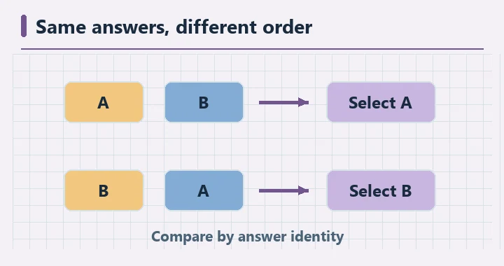
AI Safety · 评估者偏差
保留答案内容，互换展示位置，比较胜负翻转、自动复核覆盖率与人工基准。
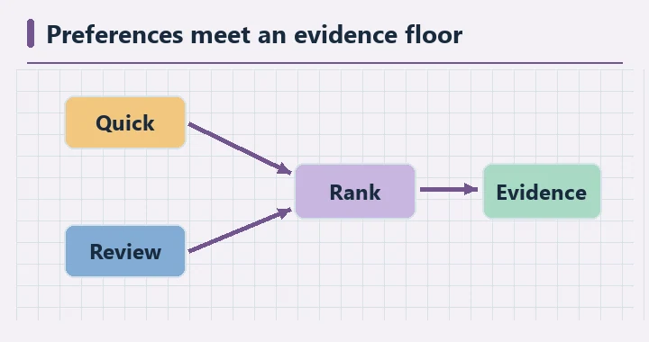
AI Alignment · 偏好与目标
调整两类评审人群的比例，再加一条独立证据底线，比较推荐的回答策略。